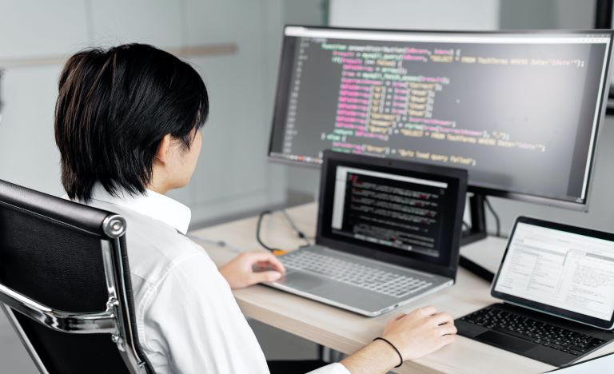
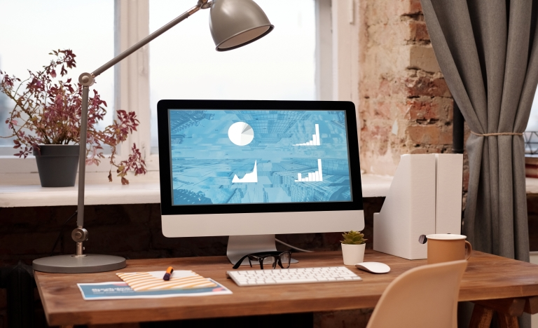

Apa Itu Komputer?

Istilah "komputer" berasal dari kata latin "computare" yang artinya menghitung. Pengertian komputer
adalah perangkat elektronik yang dapat diprogram yang menerima data mentah sebagai input dan
memprosesnya dengan sekumpulan instruksi (program) untuk menghasilkan hasil sebagai output.
Sebuah komputer adalah perangkat elektronik yang memanipulasi informasi, atau data. Ia memiliki
kemampuan untuk menyimpan, mengambil, dan memproses data. Komputer dirancang untuk menjalankan
aplikasi dan menyediakan berbagai solusi melalui komponen perangkat keras dan perangkat lunak yang
terintegrasi. Ia bekerja dengan bantuan program dan mewakili bilangan desimal melalui serangkaian
digit biner. Ia juga memiliki memori yang menyimpan data, program, dan hasil pemrosesan.
Pengertian komputer menurut ahli
Robert H. Blissmer
Komputer ialah suatu alat elektronik yang mampu melakukan beberapa tugas seperti menerima input,
memroses input, menyimpan perintah-perintah dan menyediakan output dalam bentuk informasi.
Donald H. Sanderes
Komputer adalah sistem elektronik untuk memanipulasi data dengan cepat dan tepat serta dirancang dan
diorganisasikan agar secara otomatis menerima dan menyimpan data input, memrosesnya, dan
menghasilkan output di bawah pengawasan suatu langkah-langkah instruksi program (Sistem Operasi)
yang tersimpan di dalam penyimpannya (stored program).
V.C. Hamacher dkk.
Komputer merupakan mesin penghitung elektronik yang dengan cepat dapat menerima informasi input
digital, memrosesnya sesuai dengan program yang tersimpan di memorinya dan menghasilkan output
informasi.
Jenis-jenis komputer

Komputer datang dalam berbagai bentuk dan ukuran, dan mereka melakukan banyak fungsi yang berbeda
dalam kehidupan sehari-hari. Saat kamu menarik uang tunai dari ATM, memindai bahan makanan di toko,
atau menggunakan kalkulator, kamu menggunakan sejenis komputer.
Komputer desktop
Banyak orang menggunakan komputer desktop di kantor, rumah, dan sekolah. Komputer desktop dirancang
untuk diletakkan di atas meja, dan biasanya terdiri dari beberapa bagian yang berbeda, termasuk
casing komputer, monitor, keyboard, dan mouse.
Komputer laptop
Jenis komputer kedua yang mungkin kamu kenal adalah komputer laptop yang biasa disebut laptop.
Laptop adalah komputer bertenaga baterai yang lebih portabel daripada desktop, memungkinkanmu
menggunakannya hampir di mana saja.
Komputer tablet
Komputer tablet —atau tablet —adalah komputer genggam yang bahkan lebih portabel daripada laptop.
Alih-alih keyboard dan mouse, tablet menggunakan layar sensitif sentuhan untuk mengetik dan
navigasi. The iPad adalah contoh dari sebuah tablet.
Server
Sebuah Server adalah sebuah komputer yang menyajikan informasi ke komputer lain di jaringan.
Misalnya, setiap kali kamu menggunakan Internet, kamu melihat sesuatu yang disimpan di server.
Banyak bisnis juga menggunakan server file lokal untuk menyimpan dan berbagi file secara internal.
Fungsi Komputer
Data Input (Data Entry)
Fungsi ini yaitu menerima data atau informasi dari sumber luar. Data yang diterima melalui aktivitas
di keyboard, mouse dari komputer lain atau peralatan lainnya.
Pengolahan data
Fungsi komputer yang paling utama adalah melakukan pemrosesan. Berbagai macam data dan informasi
adalah data yang diproses oleh komputer. Data yang diproses akan menghasilkan output yaitu berupa
informasi. Contohnya seperti teks, gambar, audio, video, grafik, dan lainnya.
Penyimpanan data
Fungsi data storage adalah sebagai tempat untuk menyimpan informasi. Penyimpanan yang dilakukan
berbeda-beda tergantung bagaimana informasinya akan digunakan. Fungsi komputer ini memudahkan
pengguna untuk menemukan data dan akan digunakan kembali. Data tersebut dapat disimpan di dalam
memori internal komputer maupun memori eksternal.
Keluaran data
Data yang telah diproses dalam komputer, hasilnya akan tersedia untuk digunakan oleh pengguna atau
perangkat lainnya dengan berbagai tujuan. Contoh dari data output yaitu sebagai file audio, hard
copy ke kertas, dicetak sebagai 3D model dan lain-lain.
Manfaat Komputer
Memudahkan Pekerjaan
Dalam dunia kerja, komputer dirasa mampu membantu menyelesaikan segala urusan. Beberapa manfaat
komputer yang bisa kamu rasakan dengan menggunakan komputer ini adalah bisa mengolah data,
mempercepat pekerjaan, berkirim informasi, mencetak dokumen penting, hingga berkomunikasi dengan
orang penting yang berhubungan dengan perusahaan.
Penunjang Pendidikan
Komputer dalam dunia pendidikan bisa dimanfaatkan oleh guru untuk memberikan materi pelajaran. Hanya
dengan menyajikan video interaktif, simulasi, dan program presentasi melalui komputer, siswa akan
lebih mudah dalam memahami materi pelajaran.
Berbisnis
Untuk mendapatkan manfaat komputer dengan berbisnis ini, kamu bisa melakukannya dengan membuka
rental komputer, warnet, kursus komputer, video editing, percetakan, programmer, dan lain
sebagainya. Mengikuti perkembangan zaman seperti saat ini, bisa dilihat juga perkembangan usaha atau
bisnis seperti jual beli online yang dimana juga menggunakan komputer.
Media Hiburan
Banyak sekali jenis hiburan yang bisa didapatkan dari komputer. Misalnya saja dengan menonton film,
bermain game, mendengarkan musik, dan lain sebagainya. Ditambah semakin pesatnya perkembangan
internet, membuat hadirnya banyak situs-situs yang menawarkan pengguna untuk menikmati hiburan yang
disediakan.